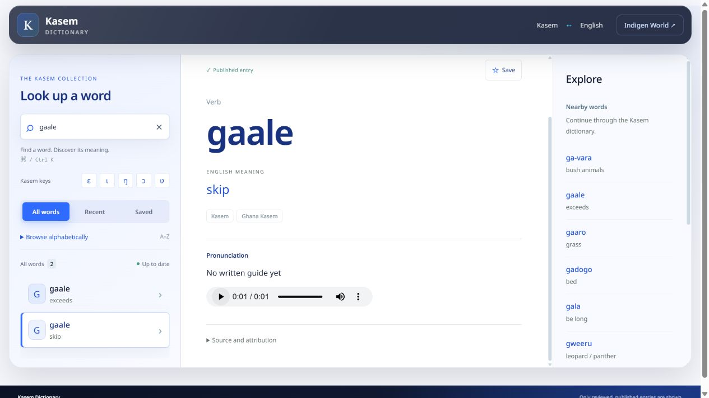

The latest Kasem listening review adds 23 approved recordings across 21 dictionary entries. Across four rounds, 89 entries now have reviewed pronunciation audio.
The listening notes help connect each recording to the right meaning. This round separates two meanings of gaale and gives fɔŋe, meaning “carefully,” its first approved recording.

One approved gaale take belongs to “skip.” The other belongs to the existing “exceeds” entry. Each meaning has its own recording, so learners can practise the sound that matches what they want to say.
More entries now have audio, including poore (“woke”), swɛ (“bathed”), swolim (“blessing”), jei (“places”) and Botarebia (“words”). The new recording for fɔŋe follows the previous review’s correction that separated “carefully” from fɔge, meaning “plaster.”
A second approved swɛ recording was identified as a fruit pronunciation. Its English name still needs confirmation, so that recording has been held for a separate entry. It has not been added to “bathed.”
The pending Nae take needs a shorter “a” vowel. It remains unpublished. The reviewed Dian entry has also been withdrawn from the public dictionary following the owner’s note; its source record is preserved for follow-up.
Open the Kasem Dictionary, search in Kasem or English, check the meaning and dialect label, then press play. Search for “gaale” to compare its two meanings, or “fɔŋe” to practise “carefully.”
The recordings are generated with Google Gemini and approved individually through the owner’s listening review. The AI label remains visible in the source and attribution details. This review does not certify every dialect or every use of a word.
The update is live in the existing website dictionary; no new app download is needed to use it there. Each entry’s player presents its primary take. Approved same-meaning alternates for kam and yerebereno are retained, although the current player has no alternate selector. Rejected and pending takes remain out of the public dictionary.